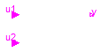
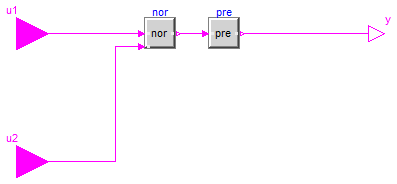

For all models in this package an FMU must be generated
Extends from Modelica.Icons.Package (Icon for standard packages).
| Name | Description |
|---|---|
| Nor | |
| NorPre |

Extends from Modelica.Blocks.Logical.Nor (Logical 'nor': y = not (u1 or u2)).
| Type | Name | Description |
|---|---|---|
| input BooleanInput | u1 | Connector of first Boolean input signal |
| input BooleanInput | u2 | Connector of second Boolean input signal |
| output BooleanOutput | y | Connector of Boolean output signal |

Extends from Modelica.Blocks.Interfaces.partialBooleanSI2SO (Partial block with 2 input and 1 output Boolean signal).
| Type | Name | Default | Description |
|---|---|---|---|
| Boolean | Qini | false | Start value of Q at initial time |
| Type | Name | Description |
|---|---|---|
| input BooleanInput | u1 | Connector of first Boolean input signal |
| input BooleanInput | u2 | Connector of second Boolean input signal |
| output BooleanOutput | y | Connector of Boolean output signal |